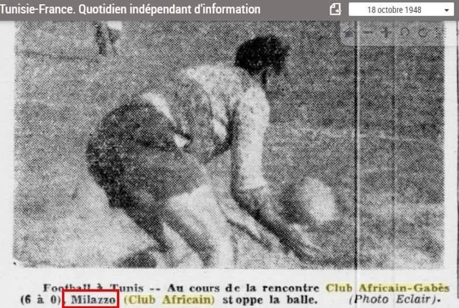

البورتريه 5 من 10 · النادي الإفريقي والأجانب قبل الاستقلال
سوفور ميلاتسيو
لاعب النادي الإفريقي
4 وثائق أرشيفية · الصفحات 63 إلى 65 من الكتاب
في كتابه «أجمل سنوات الأقدام السوداء» (les plus belles années des pieds noirs)، يصف أندري تويل، اللاعب السابق في الاتحاد الرياضي التونسي (UST) ثم في النادي الإفريقي (CA)، الفريقَ الإيطالي «إيطاليا» بأنّه نادٍ فاشي!
اقرؤوا هذه الفقرة:
« فريق إيطاليا، المؤلَّف من لاعبين فاشيين، يرتدون زيًّا أسود بالكامل، ويؤدّون التحية باليد اليمنى مرفوعة، وهم يهتفون: «دوتشي! دوتشي! دوتشي!» « L’Italia, composée de joueurs fascistes, portant une tenue entièrement noire, saluant la main droite levée, tout en scandant : « Duce ! Duce ! Duce ! »
وكانوا يقصدون موسوليني، الدكتاتور زعيم إيطاليا الفاشية. »Ils faisaient allusion à Mussolini, le dictateur chef de l’Italie fasciste. »
يقدّم أندري تويل في مؤلَّفه ملاحظة لا لبس فيها: كان الترجي الرياضي التونسي ناديًا مؤلَّفًا من المسلمين حصرًا، في حين كان الملعب الغالي يجمع لاعبين فرنسيين — كاثوليكًا أو بروتستانت. أمّا سائر فرق تلك الفترة، فكانت ذات طابع كوسموبوليتي معلَن، تمزج بين الإيطاليين والفرنسيين والمالطيين واليهود والمسلمين.
وكان ذلك على وجه الخصوص حال النادي الإفريقي، الذي يقدّم نفسه اليوم حاملًا للواء الوطنية والإسلام، لكنّه، في ضوء الوقائع، لم يكن كذلك على الإطلاق. فهذا الدور — الحقيقي والمتجذّر والمعترف به — كان في الحقيقة دور الترجي الرياضي التونسي.
عند هذه النقطة، يفرض سؤال نفسه: من هو سوفور ميلاتسيو، وما دلالة اسمه في هذه القصّة؟
في 8 أكتوبر 2020، وفي إطار احتفالات مائوية النادي الإفريقي، حاورت إذاعة موزاييك FM أقدم مناصر للنادي على قيد الحياة، «عمّ العيد»، البالغ آنذاك 101 سنة. ومن بين الذكريات التي استحضرها، ذكرى سوفور ميلاتسيو، اللاعب السابق في فريق إيطاليا، النادي المعروف بانتمائه إلى الإيديولوجيا الفاشية الإيطالية في فترة ما بين الحربين.
وبحسب شهادة «عمّ العيد»، تعرّض ميلاتسيو إلى كسر في ذراعه، وعلى إثره رفض إعادة إدماجه ناديه، فريق إيطاليا. وعندئذ تدخّل النادي الإفريقي… ليستقبله بالأحضان.
ومن مفارقات التاريخ أنّ هذا اللاعب القادم من نادٍ فاشي سيصبح أحد صانعي اللقبين الوحيدين اللذين أحرزهما النادي الإفريقي قبل الاستقلال، سنتي 1946 و1947.